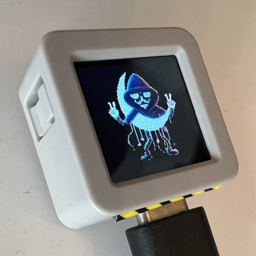
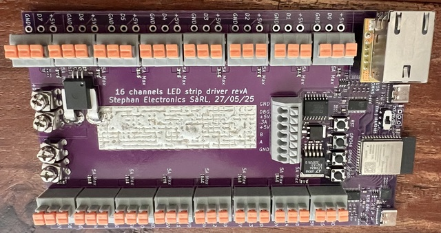
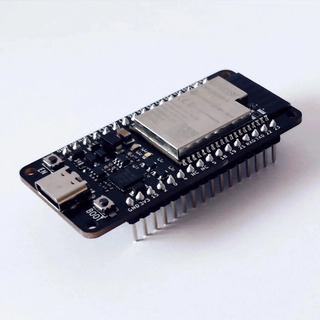
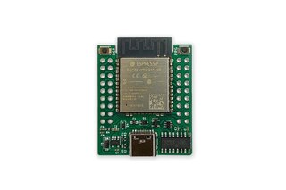
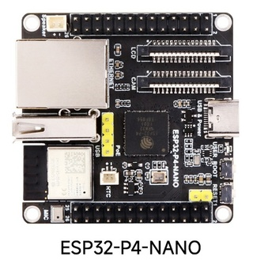
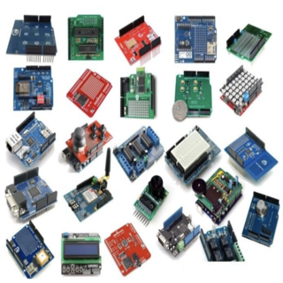

Release 0.5.9.2, Oktober 2025
This installer installs MoonModules/MoonLight on an ESP32 microcontroller.
See MoonLight Hardware for more info
For a step-by-step instruction, go to MoonLight installation
Choose your board and press Connect. Most recommended boards are listed first. If your board isn't listed here, try others
MoonBase firmware is MoonBase only, no MoonLight included (basis for other IOT projects)
| Name | Image | Flash | Shop | USB Driver |
| esp32-s3-atoms3r - 🆕 ! |  | M5Stack store | ||
| esp32-s3-devkitc-1-n8r8v | | |||
| esp32-s3-devkitc-1-n16r8v | | Ali* | ||
| esp32-s3-stephanelec-16p |  | |||
| esp32-s3-zero-n4r2 | | Ali* | ||
| esp32-d0-wrover |  | Ali* | ||
| esp32-d0-wrover-moonbase | Ali* | |||
| esp32-d0-16MB |  | Serg74 | ||
| esp32-d0 | ||||
| esp32-d0-moonbase | ||||
| esp32-p4-nano |  | Waveshare | ||
| esp32-p4-olimex 🚧 | Olimex | |||
| esp32-c3-devkitm-1 | | Ali* | ||
| esp32-c3-supermini | | Ali* | ||
| others |  |
In case your computer does not recognise your connected ESP32, you might need to install the right USB-to-serial chip drivers.
Below are the drivers for common chips used in ESP devices. See the images below to see what chip your ESP32 has.
Made using esp-web-tools
See also ESP-Web-Tools-Tutorial
*: Affiliate link